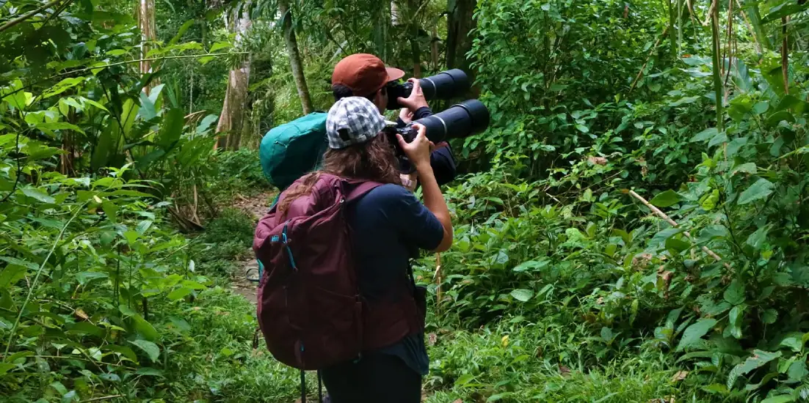
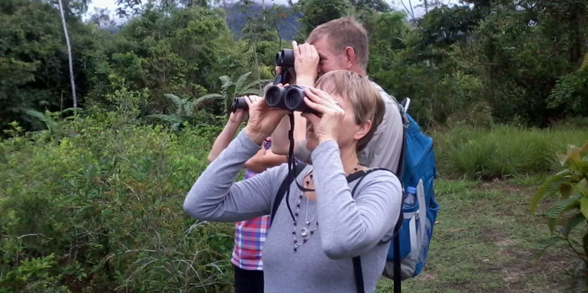

Guías y conocimientos
El blog de la jungla escondida
Consejos de viaje, encuentros con la vida salvaje y consejos de expertos para su aventura en la Amazonía peruana, directamente de nuestros guías familiares locales.
Todos los artículos
Historias de la selva
11 artículos: consejos, guías e historias de la Amazonía peruana

Parque Manú31 de diciembre de 2022
CINCO RAZONES PARA VISITAR EL PARQUE NACIONAL MANU
CINCO RAZONES PARA VISITAR EL PARQUE NACIONAL DEL MANU Cuando viajamos en un tour al Parque Nacional del Manu,
Leer artículo
Itinerario30 de diciembre de 2022
DIEZ DÍAS EN PERÚ
Perú es un país grande y hermoso que abarca tres ecosistemas únicos: costa, montaña y selva. Si solo tienes 10
Leer artículo
¿Listo para partir?
Deje de leer y comience a explorar
Reserva tu tour guiado desde Cusco al Parque Nacional del Manu. Local. Salvaje. Auténtico.